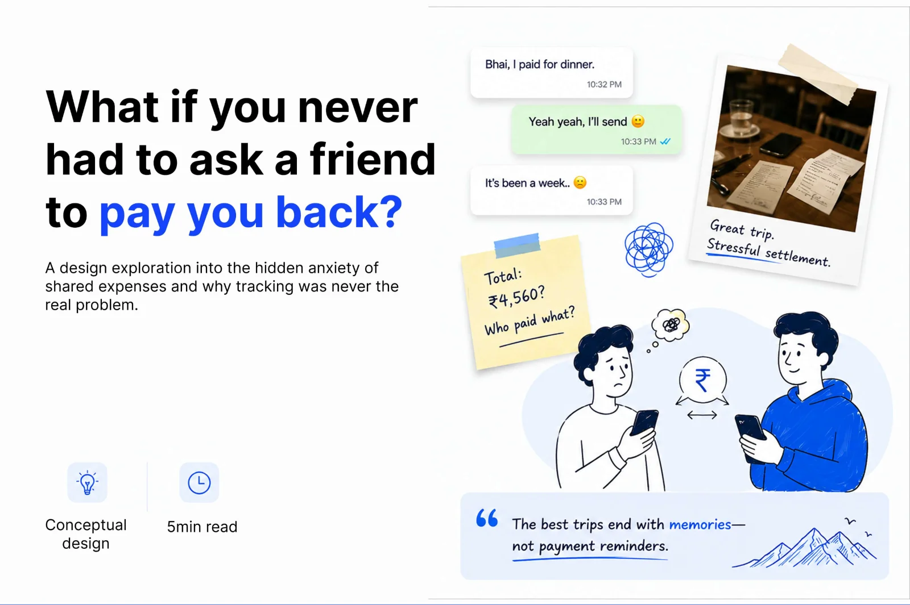
Fintech UX Case Study • Product Design
What if you never had to ask a friend to pay you back?
A design exploration into the hidden anxiety of shared expenses and why tracking was never the real problem. Reimagining group finances from awkward post-trip settlements into a frictionless, pre-funded Group Wallet inside Paytm.
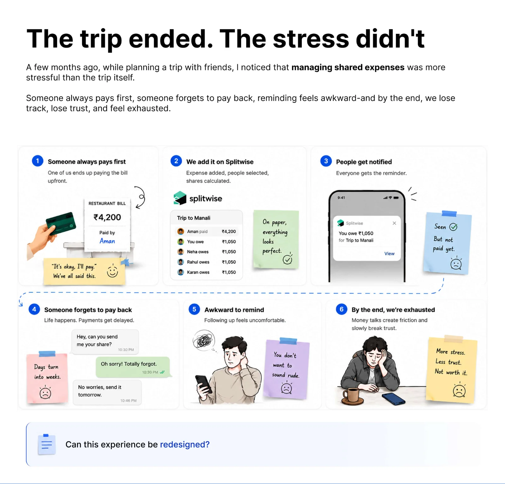
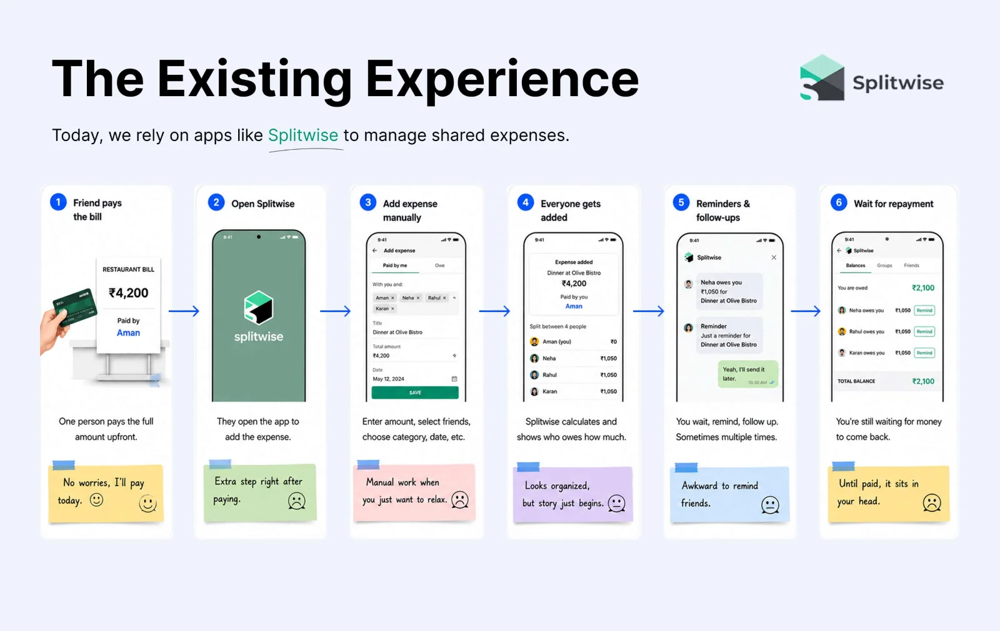
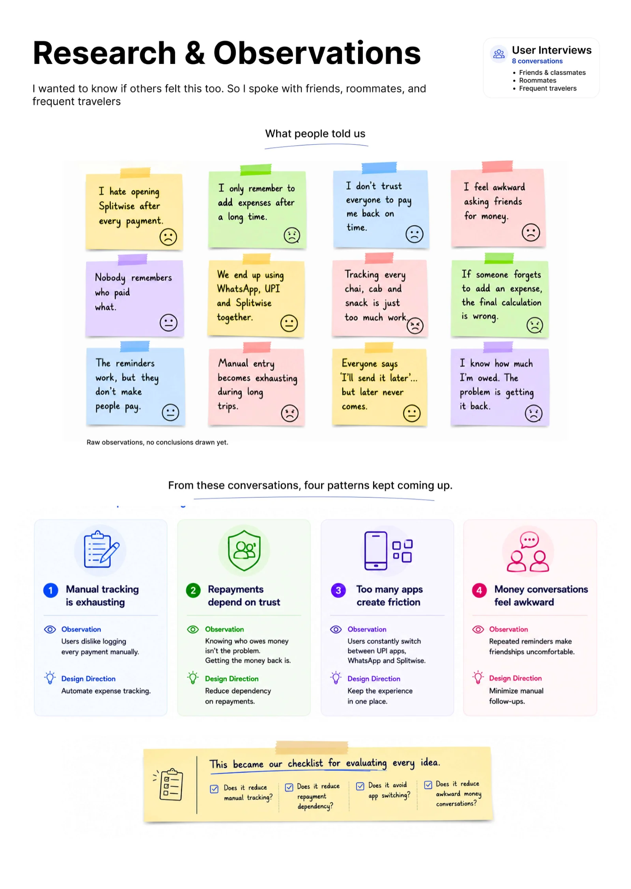
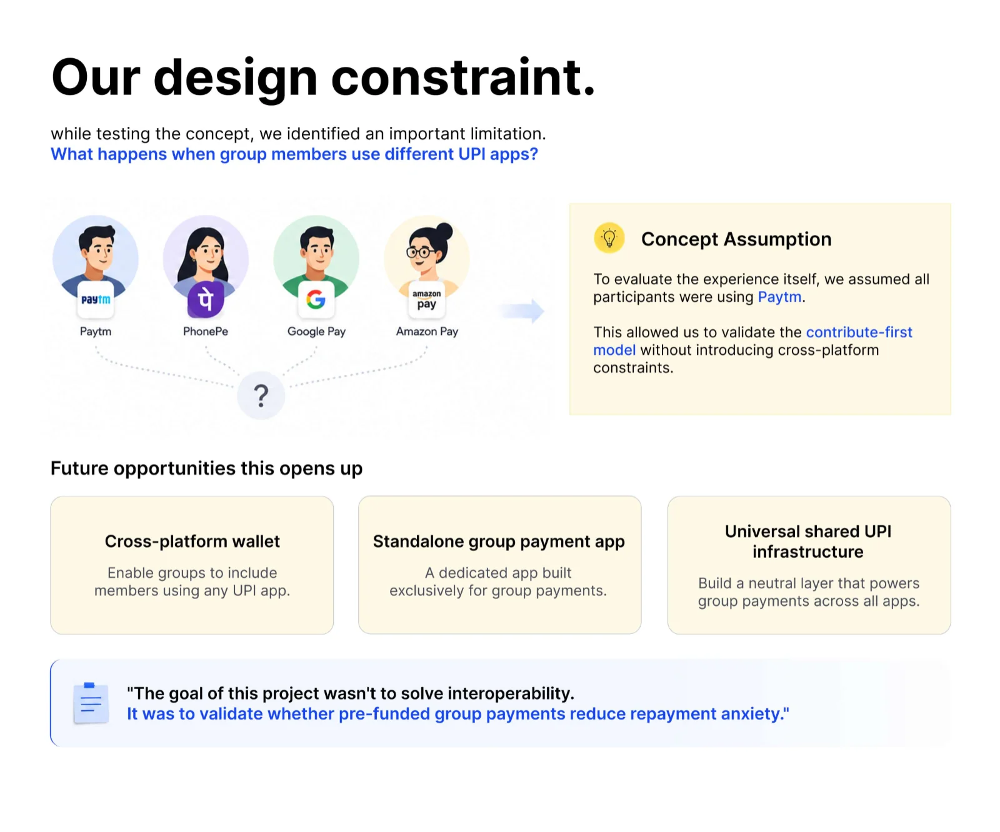
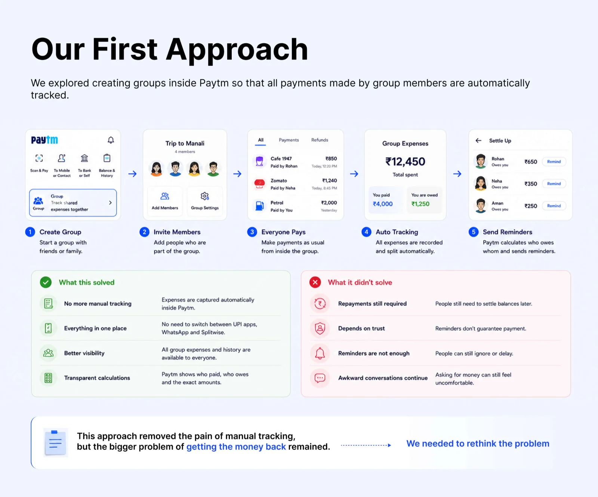
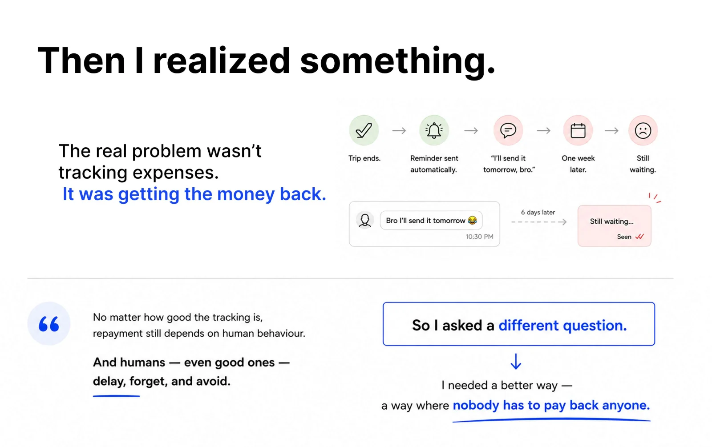
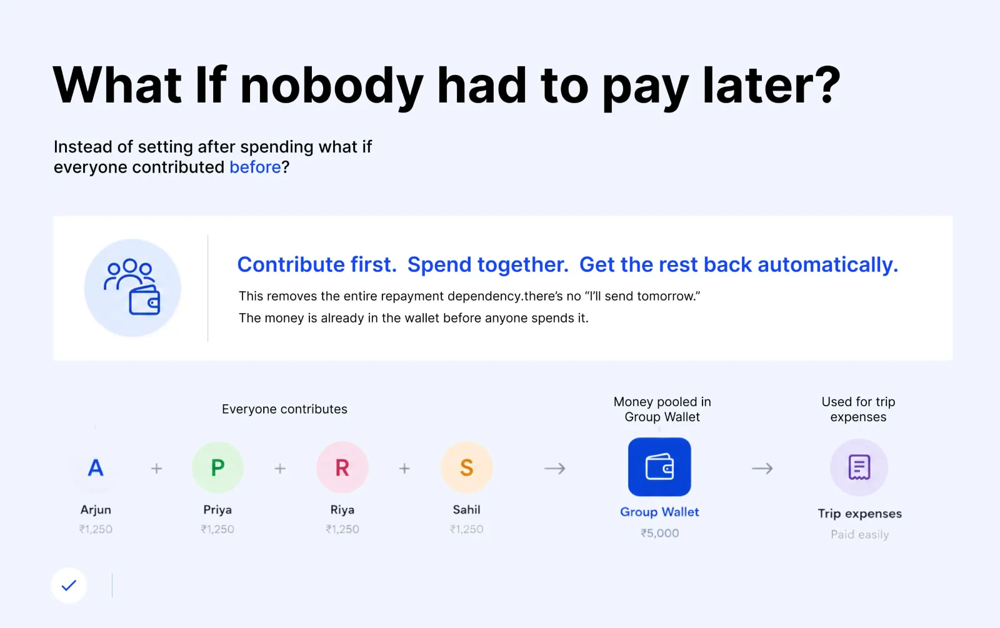
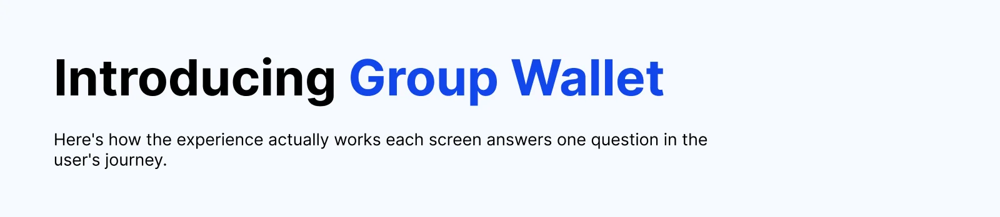
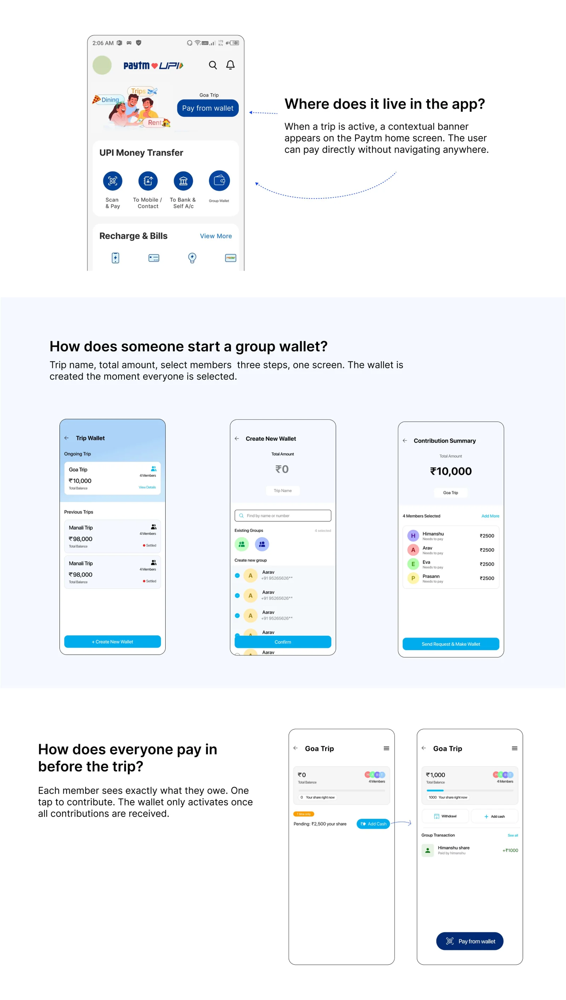
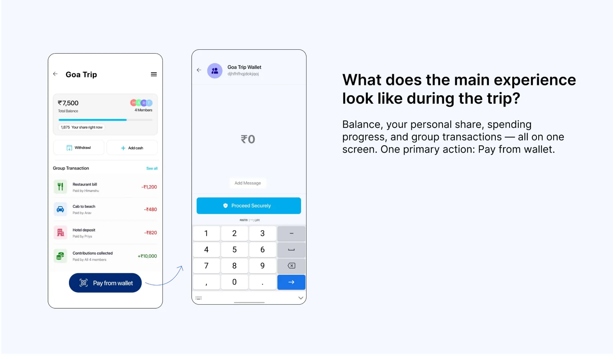
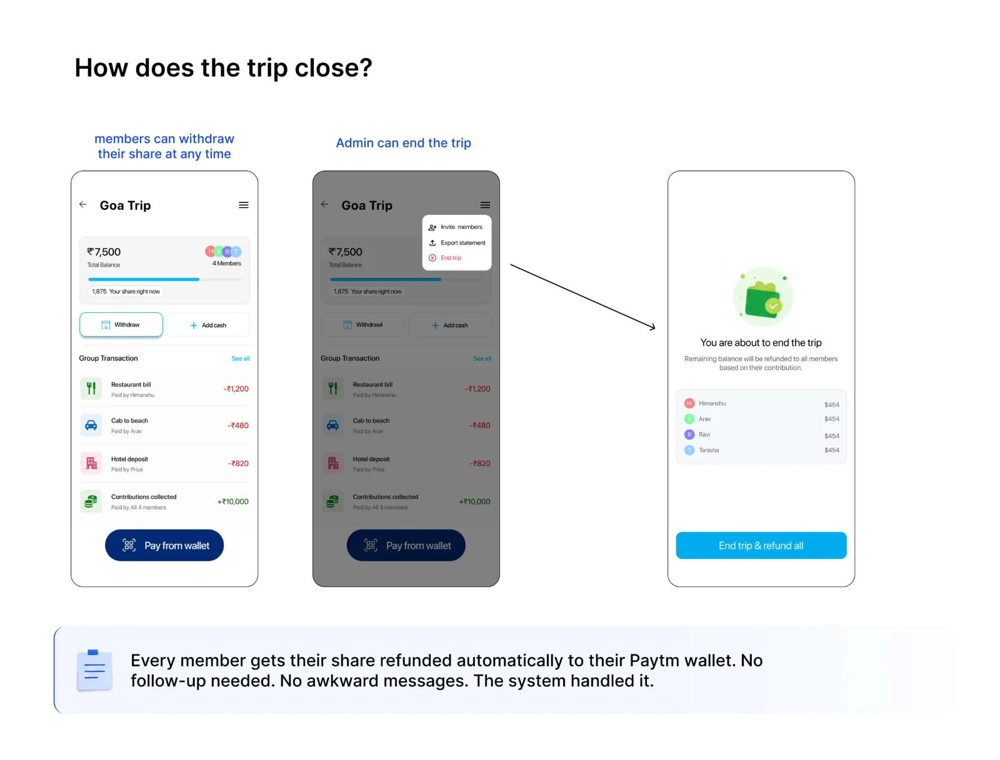